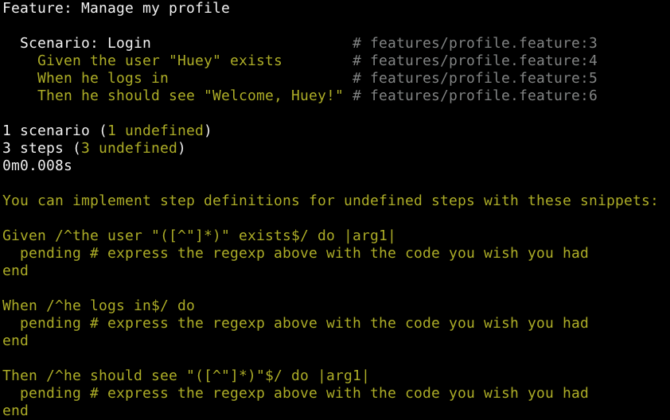
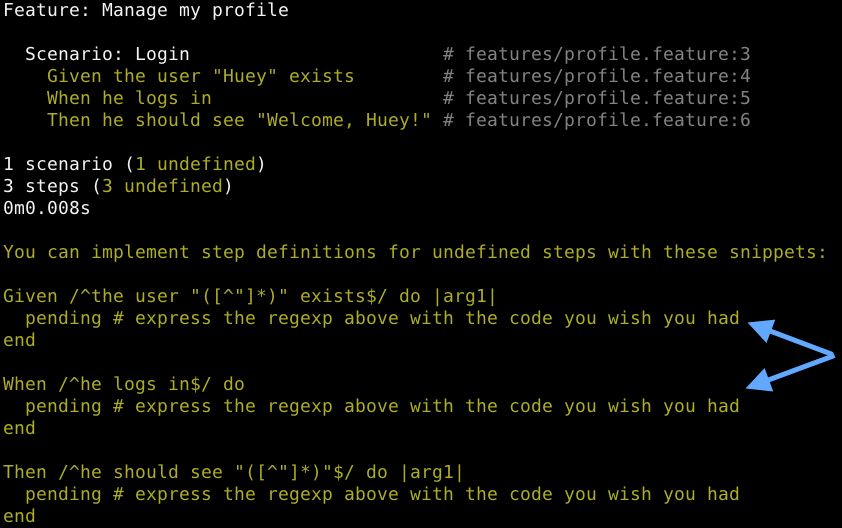

| z, ? | toggle help (this) |
| space, → | next slide |
| shift-space, ← | previous slide |
| d | toggle debug mode |
| ## <ret> | go to slide # |
| c, t | table of contents (vi) |
| f | toggle footer |
| r | reload slides |
| n | toggle notes |
| p | run preshow |
Part 1: Cucumber & Friends
Part 2: Security that matters
# Specification By Example By Example
# features/profile.feature
Feature: Manage my profile
Scenario: Login
Given the user "Huey" exists
When he logs in
Then he should see "Welcome, Huey!"$ cucumber features/profile.feature

# Create a step definition for each undefined step
# features/step_definitions/profile_steps.rb
Given /^the user "([^"]*)" exists$/ do |name|
@user = User.create!(:name => name)
end
When /^he logs in$/ do
visit('/login')
fill_in('User name', :with => @user.name)
fill_in('Password', :with => @user.password)
click_button('Log in')
end
...# first define a Chef recipe for sudo
package "sudo" do
action :upgrade
end
template "/etc/sudoers" do
source "sudoers.erb"
mode 0440
owner "root"
group "root"
variables(
:sudoers_groups => node['authorization']['sudo']['groups'],
:sudoers_users => node['authorization']['sudo']['users'],
:passwordless => node['authorization']['sudo']['passwordless']
)
end
# then use the recipe whenever you need to manage sudo
"authorization" => {
"sudo" => {
"groups" => ["admin", "wheel", "sysadmin"],
"users" => ["jerry", "greg"],
"passwordless" => true
}
}# how about configuring a firewall?
# recipe omitted for the sake of brevity...
# restrict port 13579 to 10.0.111.0/24 on eth0
firewall_rule "myapplication" do # firewall_rule is defined in the recipe
port 13579
source '10.0.111.0/24'
direction 'in'
interface 'eth0'
action :allow
end# Specify the infrastructure with cucumber
# features/server.feature
Scenario: Users can connect to server via ssh key
Given a newly bootstrapped server
When the technical users recipe is applied
Then a user should be able to ssh to the server
# create_server, run_chef, set_run_list are defined in Cucumber-Chef
# features/step_definitions/server_steps.rb
Given /^a newly bootstrapped server$/ do
create_server("teamserver", "192.168.20.20")
end
When /^the technical users recipe is applied$/ do
set_run_list('teamserver', 'recipe[users::techies]')
run_chef('teamserver')
end
...# Role management
Scenario: Require login to edit profile
Given I am not logged in
When I visit the "Edit Profile" page for "Huey"
Then I should see "You must login to access that page!"
Scenario: User cannot edit another user's profile
Given I am logged in as "Riley" with role: "Customer"
When I visit the "Edit Profile" page for "Huey"
Then I should see "You are not authorized!"
Scenario: Customer cannot access admin functions
Given I am logged in as "Riley" with role: "Customer"
When I visit the "Admin" page
Then I should see "You are not authorized!"# Secure pages
Scenario: Require SSL for admin page
Given I am logged in as "Grandpa" with role: "Admin"
When I visit the "Admin" page
Then the page should be secured with HTTPS
Scenario: Redirect HTTP requests to HTTPS
Given I am logged in as "Grandpa" with role: "Admin"
When I visit the "Admin" page using an HTTP link
Then I should be redirected to HTTPS # Information leakage
Scenario: Do not log credit card numbers
Given I make a purchase using my credit card
Then the log files should not contain my credit card number
Scenario: Do not show user's contact info to strangers
Given I am not logged in
When I view the profile for "Uncle Ruckus"
Then I should not see his email
And I should not see his phone number# SSL setup
Scenario: HTTPS web server
Given a newly bootstrapped server
When I install nginx
And I enable SSL on port 443
Then the server should respond to HTTPS requests# Complex interactions
Scenario: Request a new password
Given a user "Huey" with email "huey@example.com"
When he requests a new password
Then he should receive an email with a password reset link
Scenario: Reset password
Given "Huey" has received an email with a password reset link
When he clicks the password reset link
Then his password should be reset